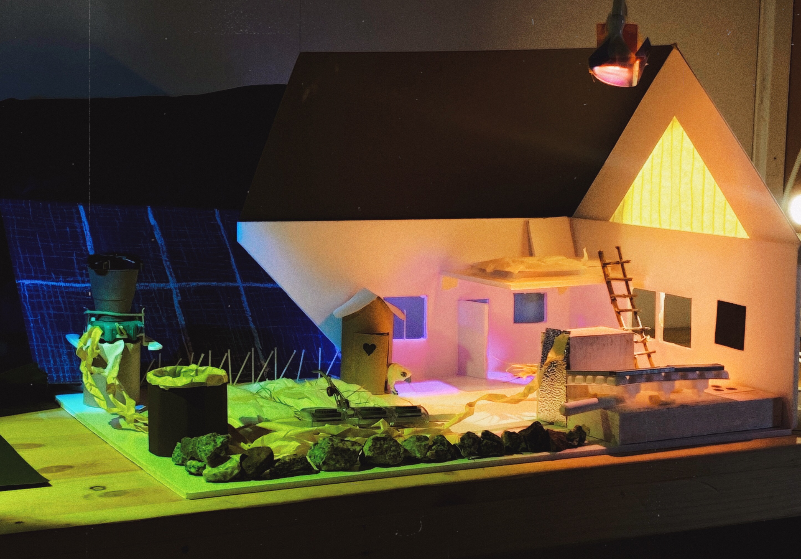

Dreams of self sustainability
February 2022 by Ture Goldkuhl



Painted my dream of a self-sustaining household. Originally was based upon a model I built of the house using carton and then lit with various lights, as were our class assignment. I mostly discarded the lighted model except for the big window (which is masking tape closely lit with a warm light!). Went for a morning feeling.